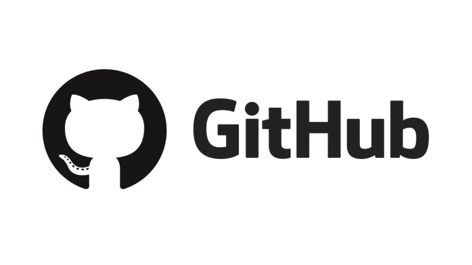
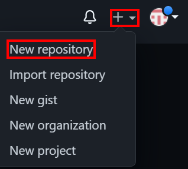
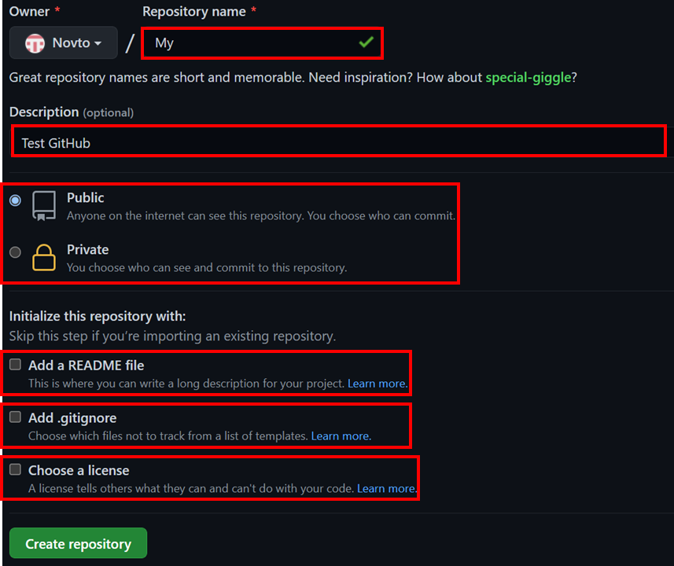
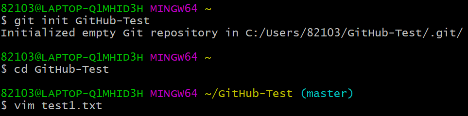
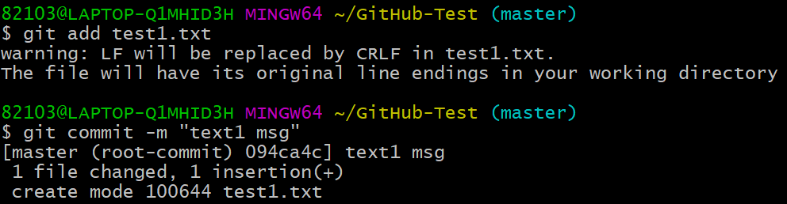
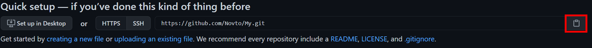
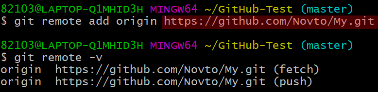

* 다음 포스팅은 깃허브(GitHub)의 사용방법에 대하여 정리한 것으로, 개인적인 공부 기록용으로 작성한 글 이기에 잘못된 내용을 포함하고 있을 수 있습니다.
* Git 관련 내용에 대한 이해가 부족하신 분은 Git 카테고리의 글을 먼저 읽고 GitHub 포스팅을 읽어 주세요.
[목차]
#1 GitHub?
#2 원격 저장소 생성
#3 지역 저장소 생성 및 연결
[목표]
- 깃허브(GitHub)를 이용해 원격 저장소를 생성하고, 지역 저장소와 연결하는 방법에 대해 이해한다.
#1 GitHub?
[Git] 카테고리 에서 자신의 컴퓨터에서 작업한 뒤 작업물을 컴퓨터 안에 커밋하는 과정에 대해서 정리했다. 이 저장소를 지역 저장소 (local repository) 라고 부른다.
하지만 이런 작업물을 지역 저장소에만 저장하는 것은 안전하지 않다. 깃을 이용하면 지역 저장소와 원격 저장소 (remote repository)를 연결해 파일들을 안전하게 백업하는 것이 가능하다.
인터넷에는 여러가지 원격 저장소 서비스들이 존재하는데, 가장 대표적인 것이 깃허브이다. 따라서 이번 포스팅 에서는 깃허브에 원격 저장소를 생성하고 지역 저장소의 파일들은 원격 저장소와 연결하여 백업하는 방법에 대해 정리 하고자 한다.
#2 원격 저장소 생성
우선 다음 깃허브 홈페이지로 접속해 계정을 생성하고, 로그인한다.
GitHub: Where the world builds software
GitHub is where over 65 million developers shape the future of software, together. Contribute to the open source community, manage your Git repositories, review code like a pro, track bugs and feat...
github.com
로그인을 완료했다면, 화면 우측 상단에 있는 [+]를 누르고, [New repository]를 선택한다.

저장소의 이름, 간략한 설명, 저장소 공개 여부, 등 세부 사항을 입력하고 [Create Repository]를 클릭하면 원격 저장소가 생성된다.

#3 지역 저장소 생성 및 연결
GitHub-Test 라는 저장소를 생성해 주고, GitHub-Test 디렉터리로 이동한 뒤, Vim 편집기로 간단한 텍스트 파일을 만들고 커밋까지 완료해 준다. (커밋 메시지는 text1 msg 로 설정 하였다.)
$ git init GitHub-Test
$ cd GitHub-Test
$ vim test1.txt
$ git add test1.txt
$ git commit -m "text1 msg"
다음으로 컴퓨터에 존재하는 지역 저장소 (GitHub-Test)를 원격 저장소 (GitHub)와 연결해 보자.
지역 저장소와 원격 저장소를 연결하기 위해서는 깃허브 저장소 주소가 필요하다. #2에서 생성한 깃허브 저장소로 접속한 뒤, 화면 상단위 오른쪽에 있는 버튼을 클릭하면 주소가 복사된다.

주소를 복사했다면 다음 명령을 입력한다.
$ git remote add origin 복사한 주소원격 저장소(remote)에 origin (주소를 가리킴)을 추가하겠다는 의미이다. 원격 저장소에 제대로 연결 되었는지 git remote 명령어를 통해 확인해 보자.
$ git remote -v아래와 같이 출력되면 연결에 성공한 것이다.
